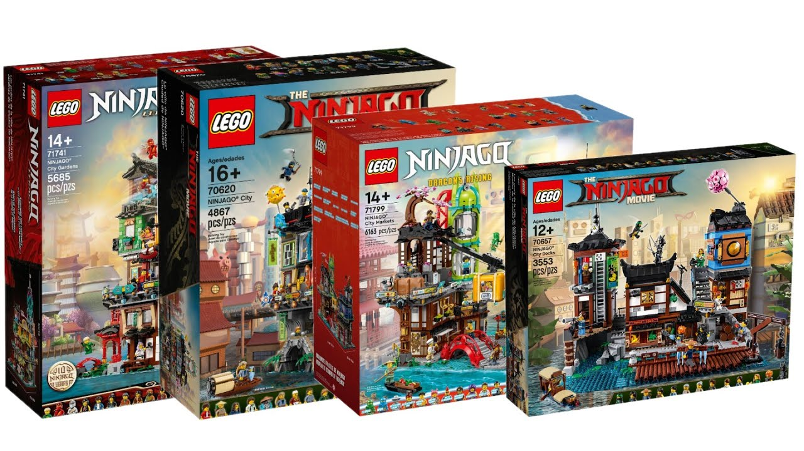

În 1987, LEGO a creat subteme în aceste medii, introducând branding care a identificat un set ca parte a unei teme. Compania a produs, de asemenea, linii de produse care au folosit piese în afara sistemului standard LEGO, cum ar fi Technic, Duplo și Fabuland. De atunci, multe teme noi au fost introduse și întrerupte, inclusiv includerea unor teme licențiate în 1999, cum ar fi Star Wars, Harry Potter sau Marvel și DC Comics. Unele dintre cele mai populare teme LEGO, la momentul actual, sunt: City, Creator, Ninjago, Star Wars și Technic.
1. LEGO CityLEGO City este una dintre cele mai populare teme LEGO. Având numeroase seturi dedicate aspectelor unui oraș, pasionații își pot crea propriul oraș al minifigurinelor. |
 |
|
2. LEGO CreatorLEGO Creator este una dintre cele mai diversificate teme ale companiei, fiind împărțită în 2 subteme: 3 în 1 pentru copii și Icons pentru adulții pasionați. |
||
3. LEGO NinjagoLEGO Ninjago este una dintre cele mai adorate teme, având ca tematică cei 6 eroi principali: Kai, Jay, Cole, Zane, Lloyd și Nya, ce se luptă cu forțele inamice. |
 |
 |
4. LEGO TechnicLEGO Technic este una dintre cele mai diversificate și complicate teme, având o gamă variată de vehicule. |
 |
|
5. LEGO Star WarsLEGO Star Wars este una dintre cele mai populare teme, ce aduce mult mai aproape „galaxia foarte îndepărtată” prin intermediul seturilor LEGO. |
| ©2024 -Nume șters- |